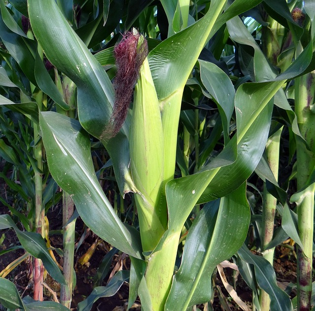

Farming Region Two - Central Plateau
Annual Rainfall: 750mm - 1000mm
Region Two spans much of the central plateau of Zimbabwe, including parts of Mashonaland and Midlands. It has moderate to high rainfall and relatively fertile soils, making it one of the most productive farming areas in the country.
This region supports a mix of commercial and small-scale farming, with successful cultivation of crops like maize, tobacco, soybeans, cotton, and groundnuts. Conservation agriculture and proper timing are key to optimizing yields in this zone.
Region 2 Crop Category Guide:
Support Services:
Extension services are available through ADSS AI ChatBot.